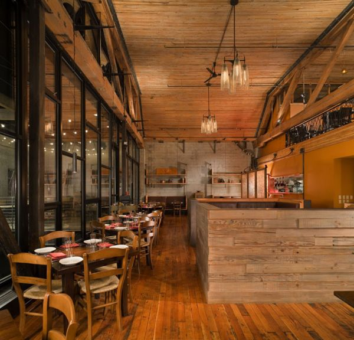
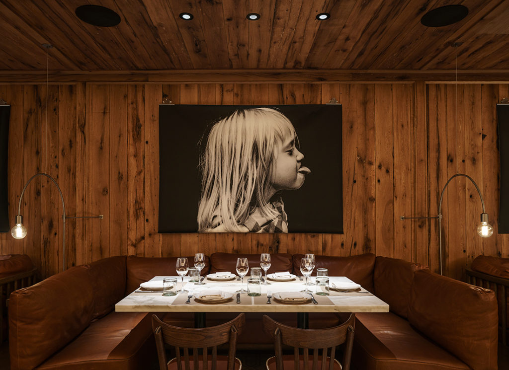
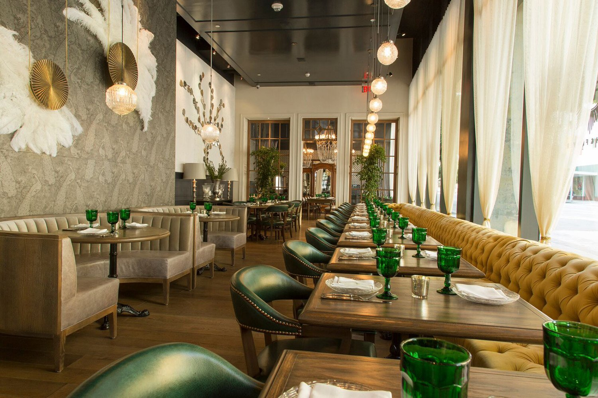

Welcome to Cutea Boba Shop
Boba Cutea provides the best Boba tea drinks by hand crafting them with the highest quality ingredients.
The ingredients contain supreme mountain teas which are cold brewed, using fresh fruits, fresh milk, and amazing chewy boba. Boba Cutea creates a delicious and beautiful experience for Boba tea lovers in Arizona.
|  | .webp) |
 |  |
One of the Best Bubble tea house in AZ with multiple locations
Our tea house is growing and located in multiple locations at the greater Phoenix area. Located at Gilbert, West Chandler, South Tempe and East Mesa and Phoenix in a total of 5 locations. Received over 35,000 followers and is increasing daily while our check-ins on Google map reached 250,000 followers.